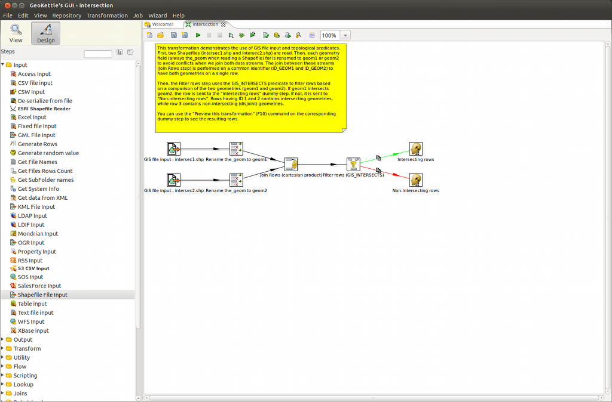

GeoKettle Quickstart¶
GeoKettle ist eine “räumlich-erweiterte” Version von Pentaho Data Integration (auch bekannt als Kettle). Es ist ein sehr leistungsfähiges, Metadaten-gesteuertes räumliche ETL-Werkzeug (Extrahieren, Transformieren und Laden) und kann zur Integration verschiedenster Datenquellen, die Erstellung und Aktualisierung von Geodatenbeständen, Data Warehouses und Web Services genutzt werden.
GeoKettle ermöglicht die Extraktion von Daten aus Datenquellen und deren Transformation, um Fehler zu korrigieren, Daten zu bereinigen, Datenstruktur zu ändern sowie die Daten standardkonform zu verwalten. Darüber hinaus können die transformierten Daten in Zielsysteme geschieben werden, zum Beispiel in Datenbank Management Systeme (DBMS), in Dateien GIS spezifischer Formate oder Raumbezogenen Web Services.
GeoKettle ist vor allem für die Automatisierung von komplexen und sich wiederholdenden Datenprozessierungen hilfreich. Konvertierungen zwischen Datenformaten, Migration von Daten zwischen Datenbanken, Einlesen von Daten in Datenbanken usw. können durchgeführt werden, ohne speziellen Code erzeugen zu müssen.
Dieser Quickstart Guide beschreibt, wie:
- vorhandene Daten-Transformationen geladen werden
- Daten-Transformationen neu erstellt werden
GeoKettle starten¶
- Wählen Sie im Startmenü des Desktops
- Bitte warten Sie einen Augenblick bis die Anwendung gestartet ist
- Folgender Dialog fordert Sie auf, ein Repository anzugeben bzw. auszuwählen. Geben Sie die Informationen an oder klicken Sie einfach auf No repository, um die GeoKettle Workbench anzuzeigen.

Workbench¶
Wie im folgenden Screenshot dargestellt, ist das Workbench-Fenster aus verschiedenen Bereichen zusammengesetzt.

Der linke Teil agiert dabei als Katalog, der einzelne Schritte für Daten-Transformationen, die miteinander kombiniert werden können, enthält. Im rechten Teil werden die Transformationen selbst bearbeitet und können da auch gestartet und getestet werden.
Auf die Inhalte der Bereiche sowie deren Verwendung wird noch im Detail weiter unten eingegangen.
Laden einer vorhanden Transformation¶
Um eine vorhandenen Transformation zu laden, wählen Sie .
Navigieren Sie zu den Beispiel-Transformationen im Unterverzeichnis /opt/geokettle/samples/transformations/geokettle,
wählen Sie eine verfügbare Beispiel-Transformation aus und klicken dann OK. GeoKettle speichert
Transformationen in Dateien mit der Endung *.ktr.
Das folgende Bild zeigt die Beispiel-Transformation « intersection ».

Eine Beschreibung der Transformation und der optionalen Direktiven sind im gelben Tooltip-Bereich dargestellt.
Um mit einer Transformation beginnen zu können, ist zunächst ein Shapefile (*.shp) als Datenquelle anzugeben. Klicken Sie hierfür auf jedes der GIS file input Icons im rechten Teil der Anwendung. Es wird folgender Dialog in Erscheinung treten.

Geben Sie den Namen des Shapefiles inlusive der Dateiendung *.shp an oder belassen Sie die Inhalte des Dialogs wie vorgegeben, um die im Beispiel angegebenen Datensätze zu verwenden, und klicken auf OK.
Nun ist alles soweit vorbereitet, um mit der Transformation der Daten zu beginnen. Dafür klicken Sie auf die Startschaltfläche (“Play”) in der Toolbar über der Transformationsbeschreibung.
Anlegen einer neuen Transformation¶
Starten Sie GeoKettle über die Workbench auf die gleiche Art und Weise, wie Sie es beim Laden von Transformationen gemacht haben (siehe vorheriger Abschnitt).
Legen sie eine neue Transformation über an. Sie können die Transformation unter einem anderen Namen speichern, indem Sie über das Menü wählen.
Wie im folgenden Bild dargestellt, sind alle Transformations-Schritte über Kategorien im linken Teil der Anwendung aufgelistet. Expandieren Sie die Kategorien, um alle darin enthaltenen Schritte einsehen zu können.

Ziehen Sie per Drag&Drop aus dem Steps Bereich einen Schritt in Ihre Transformation im transformation Bereich im rechtenTeil der Anwendung. Sie können die Bearbeitung des hinzugefügten Schrittes starten, indem Sie per Doppelklick mit der Maustaste auf den Schritt klicken.
Sprünge (Hops)
Ein Sprung definiert den Datenfluss zwischen zwei Schritten und wird als Pfeil dargestellt. Wie in der folgenden Darstellung zu sehen bedeutet die Verbindung zwischen Table input und Add sequence, dass die resultierende Ausgabe aus Table input als Parameter in Add sequence für die weitere Verarbeitung verwendet werden.

Ein neuer Sprung wird auf einem Schritt über die rechte Maustaste angelegt. Alternativ
können Sie bei gedrücker Ctrl Taste zwei Schritte einer Transformation wählen, um einen neuen Sprung zu
definieren.
Ein Sprung kann jederzeit per Doppelklick auf einem Sprung oder mit der rechten Maustaste auf einem ausgewählten Sprung geändert werden.
Einrichten der Transformation
Die meisten Schritte in einem Transformationsprozess erfordern benutzerspezifische Parameter, damit sie verwendbar sind. Klicken Sie per Doppelklick auf jden der Schritte, um die erforderlichen Parameter einzusehen und anzupassen.
Ausführen einer Transformation
Beim Ausführen von Transformationen erscheint ein weiteres Fenster unterhalb des Bereiches, wo die Transformationen definert werden. Das Fenster Execution Results enthält alle Informationen über den Datenfluss zum jeweilig ausgeführten Schritt der Transformation.
Der Tab Step Metrics (siehe folgende Abbildung) wird initial angezeigt. Hier können Sie allgemeine Informationen zum Datenfluss der Transformation selbst einsehen, z.B. wie viele Zeilen bei jedem Schritt gelesen und geschrieben werden. Die Spalte Active informiert Sie darüber, ob ein Schritt bereits gestartet ist, noch läuft bwz. beendet oder abgebrochen wurde. Sind Schritte gestartet, wird in der Spalte Time die verbleibende Zeit angezeigt. Zusätzlich zeigt Ihnen die Spalte Speed die durchschnittliche Geschwindigkeit eines Schrittes in Zeilen pro Sekunde an.

Vorschau einer Transformation
Der Versuch, eine Transformation auszuführen kann zu Fehlern führen, die im Bereich Execution Results angezeigt werden. Bitte prüfen Sie die Einträge im Tab Logging. Hier sind hilfreiche Informationen zur Quelle und den Grund des Fehlers zu finden. Passen Sie die Parameter des entsprechenden Schrittes an und starten Sie die Transformation erneut.

Um die Quelle eines Fehlers besser einzugrenzen, können Sie die Resultate bereits ausgeführter Schritte einer Transformation einsehen. Klicken Sie dafür mit der rechten Maustaste auf einen Schritte und wählen im Kontextmenü . Sie bekommen die Daten tabellarisch und in einer Karte angezeigt und können so Zwischenergebnisse begutachten, ohne die komplette Transformation erneut auszuführen.
Was kann man noch probieren?¶
Weitere Herausforderungen, die Sie meistern können:
- Erkunden Sie die Vielfalt der von GeoKettle zur Verfügung gestellten Schritte
- Testen Sie den GeoKettle Debugger, um zu sehen, was bei einer fehlerhaften Transformation nicht in Ordnung ist
- Erstellen Sie eine Transformation auf Basis Ihrer eigenen Daten
Wie geht es weiter?¶
Werfen Sie einen Blick auf die GeoKettle Dokumentation im Spatialytics Dokumentations-Center. Zögern Sie nicht Fragen im Spatialytics Forum zu stellen.